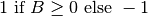

quadrat – Quadratic Equation Calculator¶
From the introduction
QUADRATIC EQUATION CALCULATOR by George Murphy VE3ERP
This programs solves quadratic equations
Quadratic equation: ax²+bx+c= 0
This program calculates 2 values of x:
x1 when b²-4ac >= 0 (if b²-4ac < 0 THEN x1 cannot be calculated)
x2 when b²+4ac >= 0 (if b²-4ac < 0 THEN x2 cannot be calculated)
(ref. Machinery's Handbook, revised 21st edition, page 118)
Analysis¶
Solution to this:
is this:
This has some numeric stability issues. It’s less than ideal as a general solution.
Example of badly-behaved quadratic.
Correct answers are
- x_1 = -99999.99999
- x_2 = -1.000000000e-05
The x_2 value will show error bits because of the instability issue.
The preferred solution is this.
Where sgn() is the sign function: .
Here’s an example of really badly-behaved quadratic. This requires quad-precision! We don’t expect to solve this with the built-in Python float type.
Correct answers are
- x_1 = 1.000000028975958
- x_2 = 1.000000000000000
Common incorrect answers for modern 80-bit floating-point processors are x_1 and x_2 = 1.000000014487979.
Implementation¶
The cmath package includes the cmath.sqrt() which properly returns complex values instead of raising an exception.
hamcalc.math.quadrat – Quadratic Equation Calculator
The standard formula has a minor numeric stability issue.
Instead of using this:
We’ll use the following alternative.
Where sgn() is the sign function: .
Test Cases
>>> import hamcalc.math.quadrat as quadratic
>>> import math
>>> quadratic.solve( 1, 4, 3 )
(-3.0, -1.0)
>>> quadratic.solve( 1, 0, 1 )
((-0-1j), (-0+1j))
>>> quadratic.solve_real( 1, 0, 1 )
Traceback (most recent call last):
File "/Library/Frameworks/Python.framework/Versions/3.2/lib/python3.2/doctest.py", line 1288, in __run
compileflags, 1), test.globs)
File "<doctest default[3]>", line 1, in <module>
quadratic.solve_real( 1, 0, 1 )
File "/Users/slott/github/local/HamCalc-2.1/python/hamcalc/math/quadrat/__init__.py", line 51, in solve_real
raise Error( "No Real Roots" )
hamcalc.math.quadrat.Error: No real roots
>>> quadratic.solve( 1, 200, -0.000015 )
(-200.000000075, 7.4999999971875e-08)
>>> quadratic.solve( 1, 100000, 1 )
(-99999.99999, -1.0000000001000001e-05)
The classic formula provides a less accurate value of -1.0000003385357559e-05 instead of the closer-to correct -1.0000000001000001e-05.
>>> a, b, c = 1, 100000, 1
>>> (-b+math.sqrt(b*b-4*a*c))/(2*a)
-1.0000003385357559e-05
>>> (-b-math.sqrt(b*b-4*a*c))/(2*a)
-99999.99999
We don’t expect the folllowing to work correctly at all. This will produce known incorrect results of (1.0000000144879793, 1.000000014487979). The test code is here, but it’s skipped as far as unit testing for validation.
>>> quadratic.solve( 94906265.625, -189812534.0, 94906268.375 )
(1.000000028975958, 1.0)
Legacy Quirks¶
The introduction is wrong. is irrelevant.
It should say something like:
When b²-4ac >= 0, computes x1 and x2 as real values
When b²-4ac < 0, the values of x1 and x2 are complex numbers
The results can be calculated rather simply.